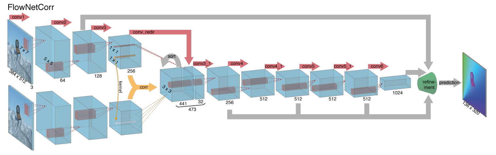

Last week I spent four days in Phoenix AZ, attending ICIP 2016 and presenting my paper. Below, I summarize some interesting papers and a few open problems that caught my attention. Disclaimer: since I work on Machine and Deep Learning I focused on these types of papers than more traditionally image-related.
Contents
The conference started with a packed tutorial on Deep Learning from Jon Shlens and George Toderici from Google. They covered in great breadth (surprisingly they didn't go deep) the field of Deep Learning from AlexNet to batch normalization, to ResNets to the Inception v4. The presentation covered image embeddings, RNNs and LSTMs, autoencoders, action recognition from videos (for example the 2-stream paper of Simonyan and Zisserman) and many others that you can find in the slides. [The link is from George Toderici's Google Drive; let me know if it stops working]
Some recent papers from their slides that I didn't know about and I found interesting were:
Object Contour Detection with a Fully Convolutional Encoder-Decoder Network in which the authors proposed an end-to end learning method to perform object contour detection using an encoder-decoder network. Interestingly, they used parts of VGG-16 for the encoder part and set up the decoder part in reverse by using bigger filter sizes (5x5 instead of 3x3) but the same feature maps in a descending order.
Beyond Short Snippets: Deep Networks for Video Classification in which the authors proposed two video-classification methods capable of aggregating the output of a ConvNet at each frame into video-level predictions. They experimented with many feature pooling techniques along with an architecture of five stacked LSTM layers.
FlowNet: Learning Optical Flow with Convolutional Networks in which the authors propose a neat architecture to find the optical flow using ConvNets. Their method includes a refinement step in which they get high resolution predictions from coarse feature maps at different levels of the ConvNet.

Pixel Recurrent Neural Networks which blew my mind because they employed RNNs to predict pixels in both spatial dimensions. Residual connections were also employed to alleviate for the 12-layer deep network.
Full Resolution Image Compression with Recurrent Neural Networks in which the authors used RNNs for image (yes image, not video) compression. In each iteration the obtain the residual between the input and the reconstruction and the provide that residual as an input to the next pass to get a higher quality reconstruction and a smaller residual. Besides the paper itself you can read a nice blog written by the authors that explains how their method works.
Before moving forward there are some exciting news, datasets, and tutorials:
In case you missed it, the ImageNet 2016 results were released last week with the top method reporting classification accuracy of less than 3%.
Jon Shlens has a tutorial on PCA. I hadn't come across it so far and it's very informative.
Open Images Dataset which comprises ~9 million URLs to images that have been annotated with labels spanning over 6000 categories.
YouTube-8M Dataset which comprises 8 million YouTube video URLs along with video-level labels from a diverse set of 4800 Knowledge Graph entities.
The Open Set Recognition Problem Tutorial by Anderson Rocha
Another very interesting tutorial talk was offered later the same day by Anderson Rocha on Open Set Recognition and the difficulties that arise in such a scenario. You can find the slides here. In closed set recognition we train our algorithms with data that correspond to a specific set of classes (for example breeds of dogs) and at test time we present to our model unseen data which however belong to one of the known classes. In open set recognition, our knowledge of the world at training time is incomplete and data that belong to unknown classes can be fed to an algorithm at test time.
In the presentation they formalized "openness", open space risk and employed a method using the statistical extreme value theory. Some interesting papers and ideas that attracted my attention and utilize these techniques were:
In a post cpu and maybe gpu world there's a chance that models will be trained in FPGAs as Rico Malvar from MSR showed us or in Tensor Processing Units. On another note, I saw a lot of papers trying to propose new methods and architectures by training ConvNets from scratch with few thousands of training samples.
Andrej Karpathy addressed this during the Bay Area Deep Learning school by posing the following Q&A:
Q: How do I know which architecture to use?
A: Don't be a hero. Take whatever works on ILSVRC (such as the ResNet), download the pre-trained model, add/delete some parts and fine-tune to your application.
Finally, some take home messages from the tutorials and panels I attended are related to learning paradigms. Besides supervised learning that most of the papers are trying to address, there's tons of interest on how to learn with a few labels per class (semi-supervised) or in an unsupervised (Yann LeCun has a nice slide with a cake describing this). To make this happen the fields of transfer learning (transfer knowledge from one domain to another by recycling models and distilling information) and active learning (a testing sample of an unseen class shows up: why not keep it and start learning it?) are going to be huge in the near future.